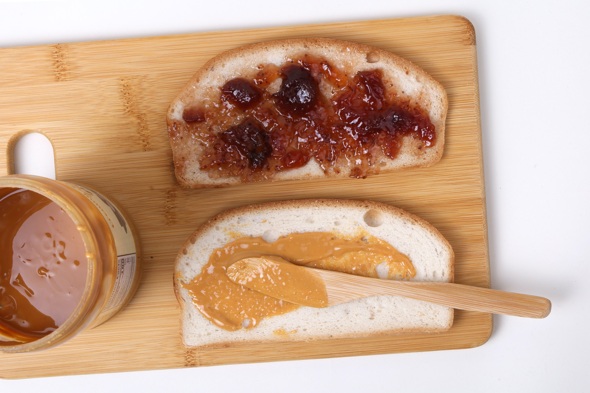

The most complex dish known to mankind

Man's second best friend
Long day at work? Nothing in the pantry but the basics? It might not solve
every problem, but the peanut butter and jelly sandwhich does just fine with
these two.
Free your mind and allow yourself to embark on a cullinary journy like no other.
I can't guarantee that you'll be able to do it perfectly on the first go, but give
it a shot and you might just find yourself within this soul enlightening dish.
Ingredients
- Bread (2 slices)
- Jelly (however much feels right)
- PeanutButter (a little less than the jelly)
Steps
- Lay the slices of bread next to eachother as if you were openingj
a book.
-
In your left hand get the amount of jelly you want onto your butterknife,
do the same with the peanut butter using your right hand.
-
Using a single motion, slide the jelly over one slice and peanutbutter over the other.
-
close the book.